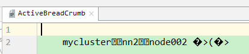

hadoop的HA分为hdfs的和yarn的
1. hdfs HA搭建
1.1 src
1.1.1 hadoop只会读取安装目录 /etc/hadoop中的配置
{1} 将这个hadoop复制为hadoop-full，使用hadoop文件夹进行HA配置
1.1.2 HA本质就是设置多个NN，通过第三方的文件系统来实现2个NN数据的同步。如果想要自动实现AS切换，还要加上zk集群和zkFC进程。
{1} 配置分
[1] zk地址，JN地址
[2] NN之间，NN和JN的通讯
[3] 自动故障转移的开启
1.1.3 https://www.jianshu.com/p/70ae01424d99 https://segmentfault.com/u/dreamtecher/articles
1.2 节点规划
1.2.1 ZK和JNN都是集群，NN有2个，要由zk决定谁是Active，zkfc和NN要在同一个物理节点
| NN1 | NN2 | DN | ZK | ZKFC | JNN |
node101 | √ |
|
|
| √ | √ |
node102 |
| √ | √ | √ | √ | √ |
node103 |
|
| √ | √ |
| √ |
node104 |
|
| √ | √ |
|
|
1.2.2 实际中zk，NN都是独享节点的。
{1} 因为zk用的很多
{2} 实际公司中集群节点数量至少2位数，因为光独立功能的节点就好几个。
1.3 HA手动故障转移
1.3.1 左侧
{1} QJM就是JN，也支持NFS
1.3.2 core-site.xml
<configuration> <!-- 把两个NameNode）的地址组装成一个集群mycluster --> <property> <name>fs.defaultFS</name> <value>hdfs://mycluster</value> </property>
<!-- 指定hadoop运行时产生文件的存储目录 --> <property> <name>hadoop.tmp.dir</name> <value>/opt/ha/hadoop-2.7.2/data/tmp</value> </property> </configuration> |
{1} 定义系统入口
[1] fs.defaultFS是定义整个hadoop系统对外暴露的入口，但现在NN有2个，所以要设置2个都为系统的入口，在fs.defaultFS种设置数组的名字，然后在hdfs设置元素以及元素的rpc和http套接字
1.3.3 hdfs-site.xml
<configuration> <property> <name>dfs.replication</name> <value>2</value> </property> <!-- 完全分布式集群名称 --> <property> <name>dfs.nameservices</name> <value>mycluster</value> </property>
<!-- 集群中NameNode节点都有哪些 --> <property> <name>dfs.ha.namenodes.mycluster</name> <value>nn1,nn2</value> </property>
<!-- nn1的RPC通信地址 --> <property> <name>dfs.namenode.rpc-address.mycluster.nn1</name> <value> node101:9000</value> </property>
<!-- nn2的RPC通信地址 --> <property> <name>dfs.namenode.rpc-address.mycluster.nn2</name> <value>node102:9000</value> </property>
<!-- nn1的http通信地址 --> <property> <name>dfs.namenode.http-address.mycluster.nn1</name> <value> node101:50070</value> </property>
<!-- nn2的http通信地址 --> <property> <name>dfs.namenode.http-address.mycluster.nn2</name> <value> node102:50070</value> </property>
<!-- 指定NameNode元数据在JournalNode上的存放位置 --> <property> <name>dfs.namenode.shared.edits.dir</name> <value>qjournal://node101:8485;node102:8485;node103:8485/mycluster</value> </property>
<!-- 声明journalnode服务器存储目录--> <property> <name>dfs.journalnode.edits.dir</name> <value>/opt/module/hadoop-2.7.2/data/jn</value> </property>
<!-- 配置隔离机制，即同一时刻只能有一台服务器对外响应 --> <property> <name>dfs.ha.fencing.methods</name> <value>sshfence</value> </property>
<!-- 使用隔离机制时需要ssh无秘钥登录--> <property> <name>dfs.ha.fencing.ssh.private-key-files</name> <value>/root/.ssh/id_rsa</value> </property>
<!-- 关闭权限检查--> <property> <name>dfs.permissions.enable</name> <value>false</value> </property>
<!-- 访问代理类：client，mycluster，active配置失败自动切换实现方式--> <property> <name>dfs.client.failover.proxy.provider.mycluster</name> <value>org.apache.hadoop.hdfs.server.namenode.ha.ConfiguredFailoverProxyProvider</value> </property> </configuration> |
{1} NN的树结构
[1] NN有2个，但对外要暴露统一的名称，还要分别设置通讯和web地址
{2} JN
[1] zk的地址放在core，JN的放在hdfs-site.xml，因为zk不仅hdfs用，jn只有hdfs用。
[2] 2个NN要谁是Active不确定，所以要通过JN同对方通信，所以要把editslog的分享地址要设置为JN的地址，保证内存数据的一致
(1) 这个配文是要被管理脚本读取的，管理脚本读取后会开启JN节点然后将JN同2个NN联系
(2) <value>后面的/mycluster是在zk注册的节点(文件夹)的前缀，因为zk不仅只给一个集群用，为了防止不同集群信息覆盖，要给每个集群设置唯一的名字
(3) JN就是journal node
{3} failover代理
[1] 因为2个NN和zkfc之间要相互调用，所以都要设置免密钥
(1) 免密钥2个需求场景
1st 管理节点设置其他所有被管理节点的免密钥
2nd 2个NN之间相互设置，为了FC能相互调用降级方法
[2] 要设置回调方法和代理，由代理对象执行回调方法
1.3.4 配置完，格式化 + 启动
{1} src
[1] 如果就一个NN，直接格式化即可
(1) 格式化意味着重新构建一个集群，会有新的clusterID，会将已有的元数据(data和logs目录)清除，创建空的fsimage和edits，version，clusterID
[2] 但如果有2个NN，如果同时格式化，会导致有2个clusterID，DN不知道向谁汇报。
(1) 设置了editslog的share目录，editslog存在JN集群种，需要先启动JN
(2) 先启动一个NN，然后通过JN同步另外一个NN==》另外一个NN不需要格式化，也获取了集群的信息
(3) DN启动时，从ANN获取集群ID
{2} 在各个JournalNode节点上，输入以下命令启动journalnode服务
sbin/hadoop-daemon.sh start journalnode
{3} 在[nn1]上，对其进行格式化，并启动
bin/hdfs namenode -format
sbin/hadoop-daemon.sh start namenode
{4} 在[nn2]上，同步nn1的元数据信息
bin/hdfs namenode -bootstrapStandby
{5} 启动[nn2]
sbin/hadoop-daemon.sh start namenode
{6} 查看web页面显示
{7} 在[nn1]上，启动所有datanode
sbin/hadoop-daemons.sh start datanode
{8} 将[nn1]切换为Active
bin/hdfs haadmin -transitionToActive nn1
{9} 查看是否Active
bin/hdfs haadmin -getServiceState nn1
{10} 手动failover的命令
Usage: haadmin
[-transitionToActive <serviceId>]
[-transitionToStandby <serviceId>]
[-failover [--forcefence] [--forceactive] <serviceId> <serviceId>]
[-getServiceState <serviceId>]
[-checkHealth <serviceId>]
[-help <command>]
1.4 配置HA自动故障转移
1.4.1 2个NN节点设置免密钥
{1} 管理节点管理其他所有
1.4.2 zk集群
{1} 安装配置
[1] 解压，在环境变量中添加zk的信息，因为管理脚本需要调用和获取一些zk的命令
export JAVA_HOME=/opt/module/jdk
export HADOOP_HOME=/opt/module/hadoop-2.7.2
export ZOOKEEPER_HOME=/opt/module/zookeeper-3.4.10
export PATH=$JAVA_HOME/bin:$HADOOP_HOME/bin:$HADOOP_HOME/sbin:$ZOOKEEPER_HOME/bin:$PATH
[2] 将默认的zoo-sample.cfg改名为zoo.cfg，修改dataDir，在下方加上集群的注册信息
(1) dataDir，唯一标识，ip，投票选举端口
dataDir=/var/bd/hadoop/zk |
|
server.1=node102:2888:3888 server.2=node103:2888:3888 server.3=node104:2888:3888 | 此处是node2、3、4作为zk节点，所以从102开始 |
(2) logDir
[3] 在数据目录创建一个myid文件，里面把serverID写上，只写一个数字即可。
[4] scp -r 源 目的地 ·pwd· 波浪号包裹的命令会先执行
{2} 启动
[1] zkServer.sh start status
1.4.3 core-site
<configuration> <!-- 指定HDFS中NameNode的地址 --> <property> <name>fs.defaultFS</name> <value>hdfs://mycluster</value> </property>
<!-- 指定Hadoop运行时产生文件的存储目录 --> <property> <name>hadoop.tmp.dir</name> <value>/opt/module/hadoop-2.7.2/data/tmp</value> </property> <property> <name>ha.zookeeper.quorum</name> <value>node102:2181,node103:2181,node104:2181</value> </property>
</configuration> |
1.4.4 hdfs-site
<<configuration> <property> <name>dfs.replication</name> <value>2</value> </property> <!-- 完全分布式集群名称 --> <property> <name>dfs.nameservices</name> <value>mycluster</value> </property>
<!-- 集群中NameNode节点都有哪些 --> <property> <name>dfs.ha.namenodes.mycluster</name> <value>nn1,nn2</value> </property>
<!-- nn1的RPC通信地址 --> <property> <name>dfs.namenode.rpc-address.mycluster.nn1</name> <value>node101:9000</value> </property>
<!-- nn2的RPC通信地址 --> <property> <name>dfs.namenode.rpc-address.mycluster.nn2</name> <value>node102:9000</value> </property>
<!-- nn1的http通信地址 --> <property> <name>dfs.namenode.http-address.mycluster.nn1</name> <value>node101:50070</value> </property>
<!-- nn2的http通信地址 --> <property> <name>dfs.namenode.http-address.mycluster.nn2</name> <value>node102:50070</value> </property>
<!-- 指定NameNode元数据在JournalNode上的存放位置 --> <property> <name>dfs.namenode.shared.edits.dir</name> <value>qjournal://node101:8485;node102:8485;node103:8485/mycluster</value> </property>
<!-- 声明journalnode服务器存储目录--> <property> <name>dfs.journalnode.edits.dir</name> <value>/opt/module/hadoop-2.7.2/data/jn</value> </property>
<!--启动自动代理--> <property> <name>dfs.ha.automatic-failover.enabled</name> <value>true</value> </property>
<!-- 配置隔离机制，即同一时刻只能有一台服务器对外响应 --> <property> <name>dfs.ha.fencing.methods</name> <value>sshfence</value> </property>
<!-- 使用隔离机制时需要ssh无秘钥登录--> <property> <name>dfs.ha.fencing.ssh.private-key-files</name> <value>/root/.ssh/id_rsa</value> </property>
<!-- 关闭权限检查--> <property> <name>dfs.permissions.enable</name> <value>false</value> </property>
<!-- 访问代理类：client，mycluster，active配置失败自动切换实现方式--> <property> <name>dfs.client.failover.proxy.provider.mycluster</name> <value>org.apache.hadoop.hdfs.server.namenode.ha.ConfiguredFailoverProxyProvider</value> </property> </configuration> |
{1} 将SNN的配置删除，因为已经有了双NN
[1] 官网说第二个NN也可以做SNN的工作
{2} 启动故障转移
1.5 此时HA自动故障转移配置已经完成，开始手动启动
1.5.1 启动zk
1.5.2 启动JN
{1} 启动JN会自动创建data和logs，因为JN的目录也是设置在data下
{2} 在1、2、3启动JN
[1] hadoop-daemon.sh start journalnode
{3} JN通过java编写，通过jps
1.5.3 格式化zk
{1} 在zk节点上创建hadoop的节点，只需要在第一次时执行。启动zkFC之后NN在这个目录下争抢锁，决定谁是Active
[1] 格式化zk节点，这一步跟NN启动无先后顺序
[2] 先启动zk集群
{2} hdfs zkfc -formatZK
{3} 此时通过zkCli去查看zk的树形目录，会发现有hadoop-ha节点，如果里面的内容为空说明格式化完成
1.5.4 手动选一个NN节点，格式化。然后启动这个NN
# 格式化集群的 NameNode (在 node-1 上执行) $ hdfs namenode -format
# 启动刚格式化的 NameNode (在 node-1 上执行) $ hdfs-daemon start namenode
# 同步 NameNode1 元数据到 NameNode2 上 (在 node-2 上执行) $ hdfs namenode -bootstrapStandby
# 启动 NameNode2 (在 node-2 上执行) $ hdfs-daemon start namenode |
{1} hadoop namenode -format
{2} hadoop-daemon.sh start namenode
1.5.5 启动另外一个NN，要通过专门的standby命令启动
{1} hdfs namenode -bootstrapStandby
{2} hadoop-daemon.sh start namenode
[1] hdfs namenode -bootstrapStandby并不会启动只是同步
[2] 一定要关防火墙
1.5.6 手动启动zkfc，不然2个都是standby，start-dfs.sh会把zkfc一起启动
1.5.7 手动启动DNs
1.6 使用start-dfs.sh自动启动hadoop集群
1.6.1 如果把zk关掉在启动，会发现2个NN都是Standby，没有active，因为没有zk协调
1.6.2 test
{1} node101
{2} idea的zkGUI
1.7 testHA
1.7.1 nn
{1} 将active的NN kill，然后再去GUI页面查看，会发现原来Standby的变成了active
[1] 如果再把原来的active恢复，active不变，新恢复的变为standby
{2} 在zk的节点系统中通过ls查看，也可以观察到mycluster节点下 的active节点发生变化
{3} idea中的zkGUI

1.7.2 zkFC
{1} kill 当前active的fc kill -9 pid
{2} active变成standby，原来的S变为A
{3} 将zkFC进程重启。hadoop-daemon.sh start zkfc
{4} zkFC被kill，会导致active的切换，重启后，不会有影响，zkFC仅仅是个监控环境的
1.8 note
1.8.1 如果没设置主机名，NN的DN列表会显示不全
1.8.2 如果HA时core-site的defaultFs没有写统一的名称而仅仅写了一个节点的地址，会导致一个NN启动另一个NN直接关闭
1.8.3 修改配置后要重新格式化zk和NN
1.8.4 SSH勿忘把自己的公钥复制给自己
1.8.5 rsync的脚本名字一定不能是rsync，会死循环。脚本循环执行时，节点不要写多了，虽然不报错，但不优雅
2. yarn HA的原理和搭建
2.1 src
2.1.1 原理同hdfs的不同，利用zk监控另一个RM的状态，但没有zkFC，直接依赖zk，
2.1.2 官方文档：
http://hadoop.apache.org/docs/r2.7.2/hadoop-yarn/hadoop-yarn-site/ResourceManagerHA.html
2.2 YARN-HA工作机制

2.3 配置YARN-HA集群
2.3.1 环境准备
2.3.2 规划集群
hadoop102 | hadoop103 | hadoop104 |
NameNode | NameNode |
|
JournalNode | JournalNode | JournalNode |
DataNode | DataNode | DataNode |
ZK | ZK | ZK |
ResourceManager | ResourceManager |
|
NodeManager | NodeManager | NodeManager |
2.3.3 具体配置
{1} yarn-site.xml
|
{2} 同步更新其他节点的配置信息
2.4 启动hdfs
（1）在各个JournalNode节点上，输入以下命令启动journalnode服务：
sbin/hadoop-daemon.sh start journalnode
（2）在[nn1]上，对其进行格式化，并启动：
bin/hdfs namenode -format
sbin/hadoop-daemon.sh start namenode
（3）在[nn2]上，同步nn1的元数据信息：
bin/hdfs namenode -bootstrapStandby
（4）启动[nn2]：
sbin/hadoop-daemon.sh start namenode
（5）启动所有DataNode
sbin/hadoop-daemons.sh start datanode
（6）将[nn1]切换为Active
bin/hdfs haadmin -transitionToActive nn1
2.5 启动YARN
（1）在hadoop102中执行：
sbin/start-yarn.sh
（2）在hadoop103中执行：
sbin/yarn-daemon.sh start resourcemanager
（3）查看服务状态，如图3-24所示
bin/yarn rmadmin -getServiceState rm1